Portable OpenCPN V2
How to create a portable OpenCPN program on a USB memory stick, including the split-screen configuration
The Help files in the OpenCPN program are out-of-date with the latest release 4.6.1. I will describe the method I have found to create a folder containing the necessary files and folders that can be copied to a USB memory stick (flash drive) and used directly with a Windows based computer.
Create a folder on the Desktop (or any convenient place) titled “Portable OpenCPN”. The necessary files and sub-folders will be placed in this folder. It’s the one that, when done, can be copied to a memory stick for portable use.
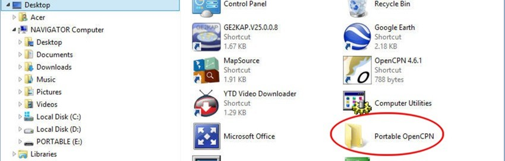
On the C:\ drive locate the OpenCPN folder under Program Files (x86)
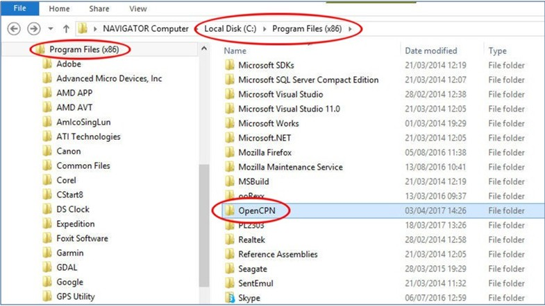
Open this folder (right-click and select Open or double left-click). Select all files and folders (CTL-A) then right-click and select Copy to place these files and folders on the clipboard.
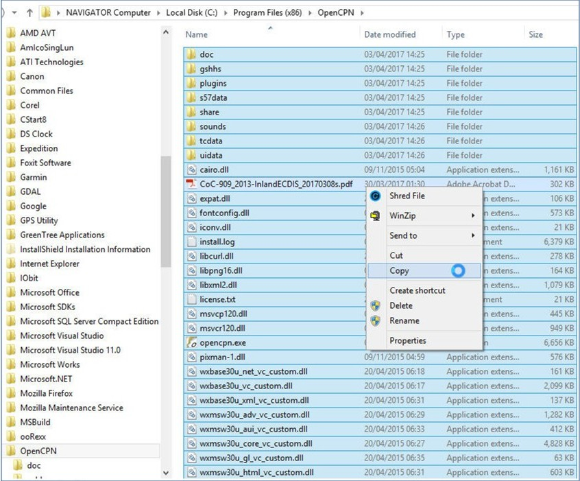
Navigate back to the Desktop, open the Portable OpenCPN folder, right-click on the empty screen and select Paste.
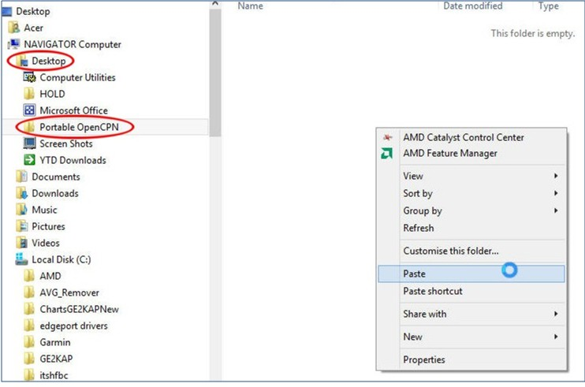
On the C:\ drive, locate the opencpn folder under the Program Data folder. (NOTE: The Program Data folder is a hidden file and must be selected to be shown (It’s a selection on Control Panel/Folder Options)). Open this folder, select all the files except Crash Reports and Copy to the clipboard.

As before, return to the Portable OpenCPN folder on the Desktop and Paste these files and folders into that folder.
To enable the program to run from the memory stick it is necessary to use a ‘batch’ file for launching. The batch file is created by any text editor but saved with a ‘.bat’ suffix, not a .txt suffix..
I’ve used Notepad to add the words as shown.
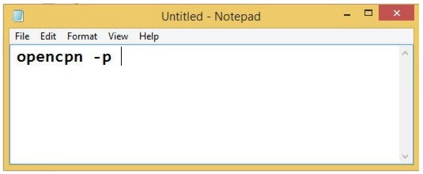
Select File/Save As…
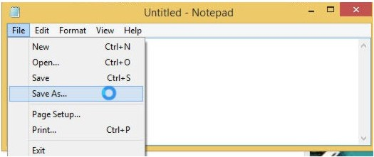
On the Save As screen select from the elevator Áll Files (*.*) Otherwiseit wants to save it as a .txt file.
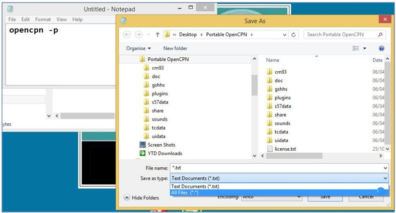
On the next screen I have entered the name ÁLWAYS DBL CLICK HERE TO START.bat Note the suffix .bat. Now click on Save. The name for this file is up to you. If the name starts with the letter ‘’A’’ then it will be visible at the top of the files and under the folders when the folder is open.
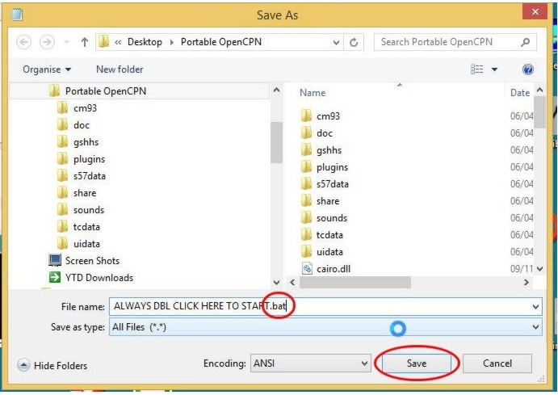
… and save it with a click in the Portable OpenCPN folder on the Desktop.
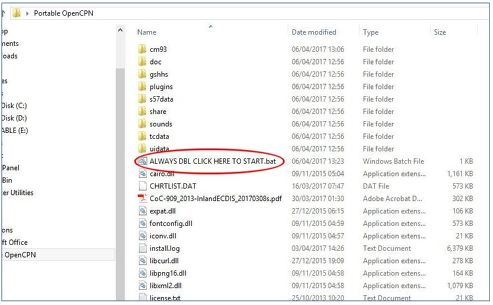
So far we have loaded the basic OpenCPN program on the memory stick but it will need charts and other items to be useful. Here I have created a ‘CHARTS’ folder under the Portable OpenCPN folder. From my host computer I have copied the charts as shown: the cm93 vector charts from 2007 (the best for the SEAsia waters) and my collection of .kap Overlay Charts for Indonesia and the Philippines that were created with the GE2KAP program.
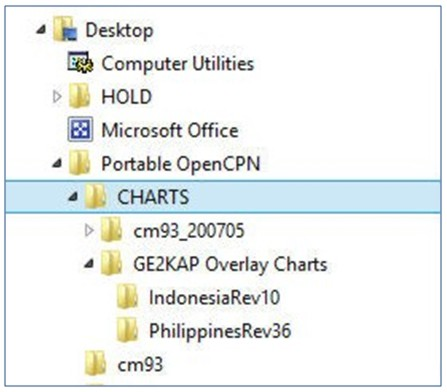
Other items I find useful I have copied from my host computer.
The Layers and User icons folders are located in the Program Data/opencpn folder. These are copied and pasted into the Portable OpenCPN folder. Placing a Layers folder here allows the contents to be displayed or hidden with one click in the Route & Mark Manager within the OpenCPN program. The UserIcons folder contains additional icons from those in the default installation when describing marks you create in the program. These are available from the OpenCPN Downloads page on the internet.
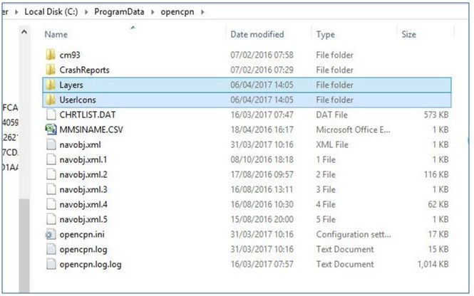
I have plugins on my host computer that are in addition to the default ones that come with the OpenCPN program. To have these in the portable version I have copied them from my host computer into the plugins folder in the Portable CPN folder.

Other information on my host computer that I want copied over are Anchorages, Routes and Miscellaneous Waypoints. These are shown here.
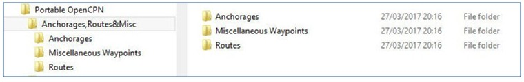
Let’s run the program! Double-click on the batch file.
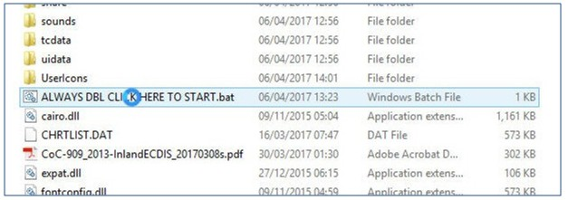
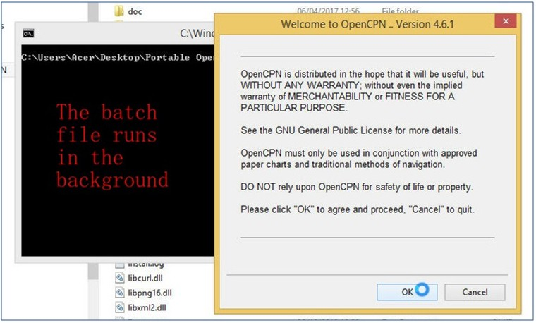
The batch file launches (it will stay running in the background) and the first welcome screen of the OpenCPN program. Click on OK and …..
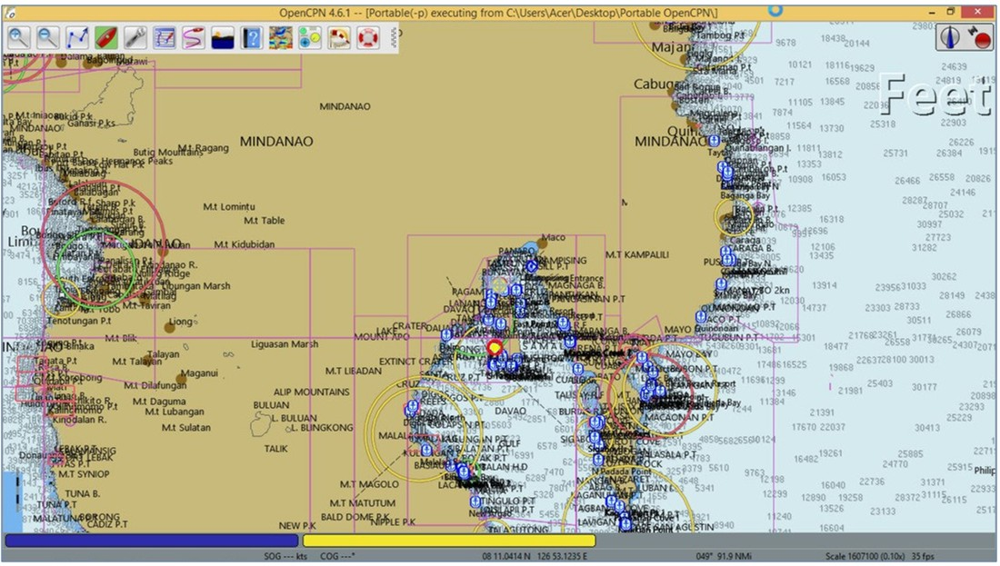
GPS CONNECTIONS
For ‘Stand alone’ mode. (The program is run from the memory stick but uses a GPS signal available on the host computer) This mode requires that a GPS signal be available, usually on some COM port. Assume such is the case where a USB GPS has been connected to the host computer and the signal is available on the COM1 serial port.
Go to Options/Connections and click on Ádd Connection’ Click on the ‘’elevator’’ to display the host computer COM port then click on ‘’Apply’.’
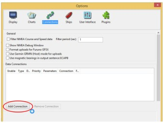
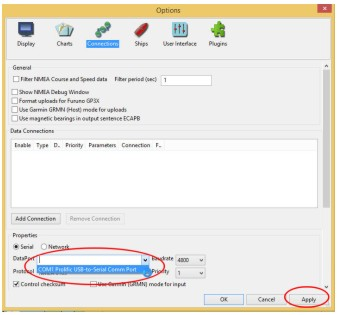
This screen appears .. click on ‘’OK’’ The display shows the GPS input is active by the green bars in the UR and the boat icon is now red color.
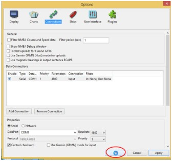
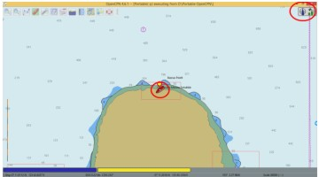
For ‘Split-screen’mode. (The program is run from the host computer and also from the portable configuration) This configuration gives two displays of the OpenCPN program on the screen. This allows a close-up view and a zoomed-out view simultaneously. To do this the OpenCPN program is run from the host computer and the second display for the split-screen is run from a portable configuration. (The portable configuration can be on a memory stick or resident on the host computer). The problem to overcome is that running the OpenCPN program from the host computer, using a COM port, denies that COM port from any other use, i.e. it cannot also be used for the portable configuration. The solution is to output the GPS signal from the host computer on a local UDP network and receive the signal on the portable configuration from the UDP network instead of a COM port.
The settings we will use are: Host computer - UDP IP 127.0.0.1, Port 10110, output Portable configuration – UDP IP 0.0.0.0, Port 10110, input
On the host computer, go to Options/Connections. Click on ‘’Add Connection””. Click on ‘’Network’’, check the‘’UDP’’ button, insert numbers as shown, check the
“”Output ..”” box and click on “”Apply””.
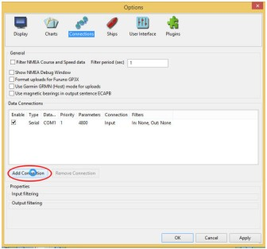
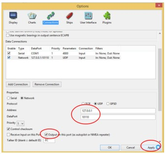
You ‘may’ see this screen appear:
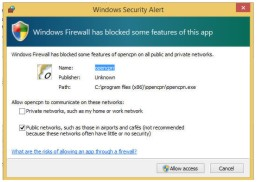
Check and uncheck the boxes as shown and click on ‘’Allow access’’
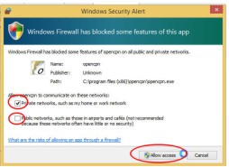
Launch the portable OpenCPN program. Repeat as above to establish these settings: Click on ‘’OK’’.
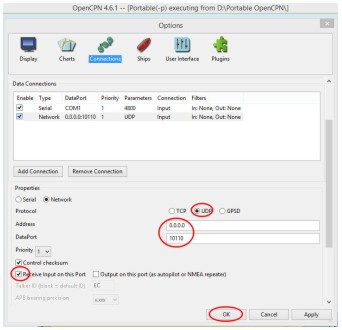
Now display both programs and move the edges to show a split-screen display. Note that the GPS data is present on both screens.
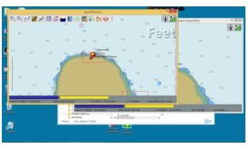
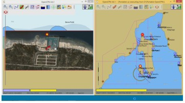
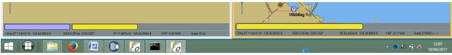
HINT: When moving the edges of the two screens down, do not go into the ‘taskbar ’area, though it may be hidden. Avoiding this area will keep the screen configurations in the same split-screen mode when next re-launching the programs.
VOILA!
See, that wasn’t so hard was it? If you have problems or need help I am just an email away. Email: yachties(that symbol)yahoo.com
Terry
18 April 2017